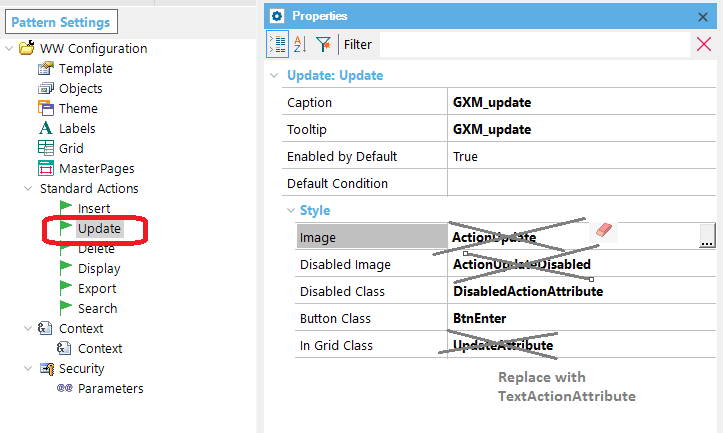

The Carmine Theme determines a completely new design template for the Work with for Web Pattern objects. In particular, note in the image below the Insert form action, and the Update and Delete grid actions, which are represented as labels. For KBs which are converted from GeneXus X Evolution 3 (which use the Flat Theme) and are converted for using Carmine, the template used for the WW objects has some aspects which are inherited from the old (Flat) template. This behavior is due to compatibility reasons. The Insert action form is displayed like a button, and the Update and Delete grid actions are represented as images, as shown in the figure below: If you want to change this behavior, you have to edit the pattern settings... And make the following changes: 1. For the Update and Delete Standard Actions, remove the Image and Disabled Image, and change the value of the "In Grid Class" to "TextActionAttribute".  So after the changes it will be as follows: 2. For the Insert Standard Action, change the Button Class to "BtnAdd" value.
|